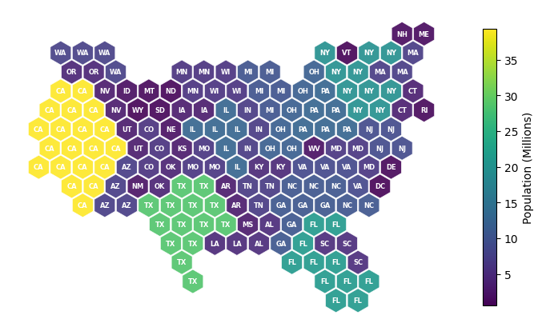
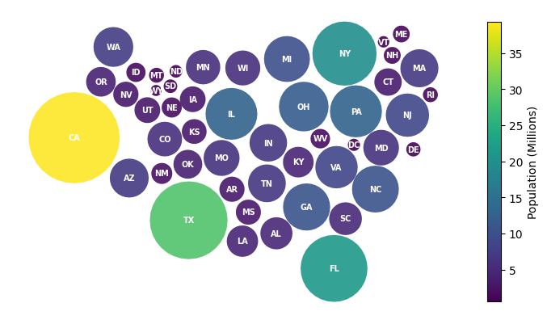

Fourteen morph and layout calls across nine notebooks now pass show_progress=False, so no tqdm fragments survive into the rendered docs. The symbol cartogram quick start gains a fifth section teaching MosaicLayout, which it did not cover at all.
Two independent things, kept in separate commits.
**Progress bars.** Fourteen call sites across nine notebooks now pass show_progress=False. Most are flow.MorphOptions(...); one goes through flow.MorphOptions.preset_balanced().copy_with(show_progress=False) and one is sym.create_layout(..., show_progress=False), which takes the flag directly. The notebooks affected are the seven how-to pages, basic-flow-cartogram and basic-symbol-cartogram.
**Mosaic section.** basic-symbol-cartogram.ipynb taught the centroid, grid, circle packing and flow density layouts and stopped. It now closes with "Tiles on a Mosaic", which introduces tile_count as a second way to carry the data - by number of tiles rather than by symbol size - and MosaicLayout as the layout that keeps each region's tiles in one connected block.
A third commit fixes a factual error found while reviewing: three gallery examples commented that the state abbreviation lookup comes from the censusdis package. It comes from the bundled census snapshot, and none of them import censusdis.
Yes, and this covers it. Two specific staleness items were checked:
pip install censusdis as a prerequisite. The bundledsnapshot removed that dependency, so the cell now installs carto-flow alone.
quick start never taught the physics layout, so nothing there had to change.
nbclient, allow_errors=False:no errors, no stderr stream on any cell, and zero tqdm fragments (it/s] or %|) in any output. Runtimes 7.8 s to 37.0 s, 148 s in total.
make check: pre-commit, ruff, mypy (80 files), deptry all clean.grep over docs/ confirms no censusdis reference remains in a trackedsource. The matches left are in docs/generated/ (gitignored build output, regenerated on the next build) and two prose mentions in migrating-to-2.0.md and reference/data/index.md that correctly describe regenerating the snapshot.

The new closing section. One tile per two million people on a shared hexagon lattice, labeled by state abbreviation and colored by population. Every state's tiles form one connected block and the national outline survives, which is the property the section is there to teach.

Where the quick start used to end: the flow density layout, the last of its four sections. A reader finished the tutorial without meeting the mosaic layout.